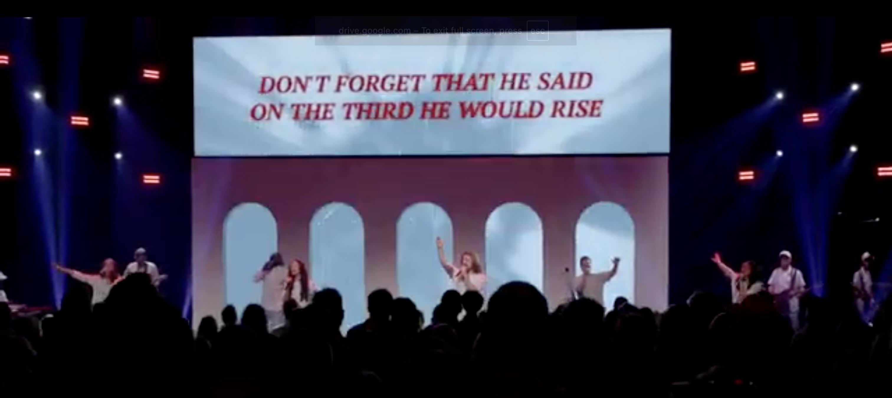

Easter 2026
A story of sacrifice, hope, and new life
About This Production
Overview
Easter 2026 is a powerful production centered around the story of resurrection and renewal. Through creative storytelling, music, and visual design, it explores the message of hope and new life that Easter represents.
Featured Moment

← Back to Past Productions
Return to all past productions